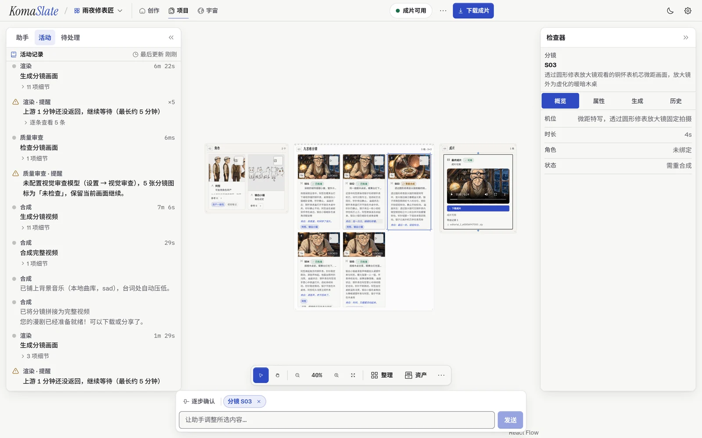
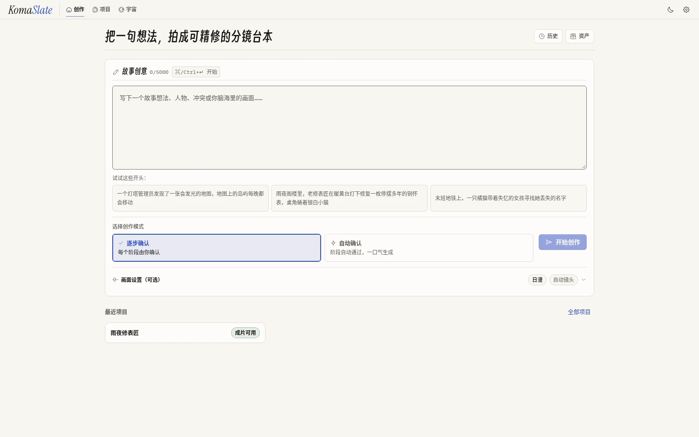
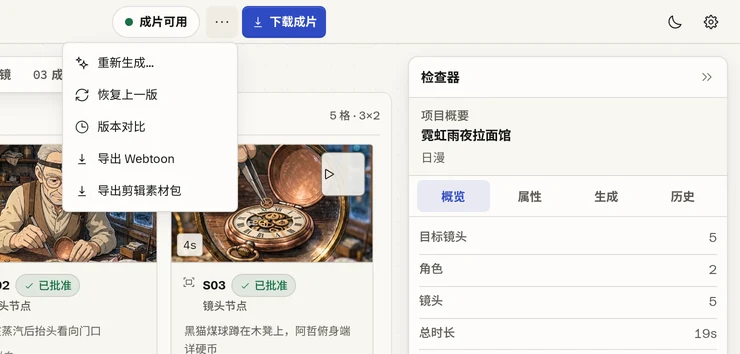
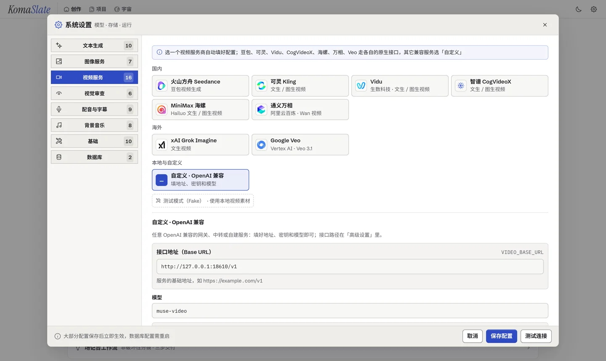
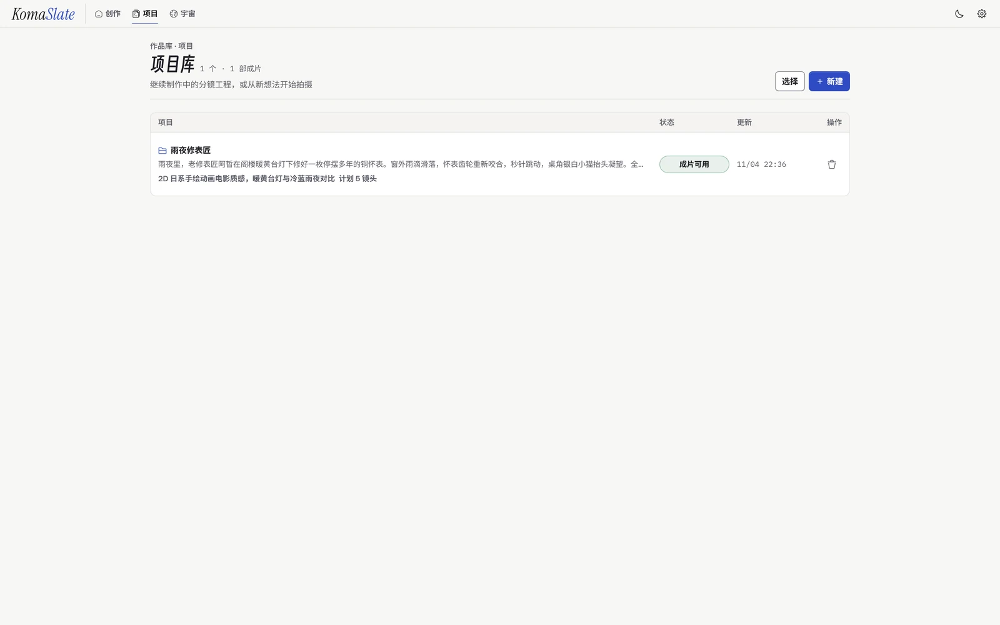

局部失效，绝不波及无辜镜头
修改 S03 的角色绑定或画面批注，只精准失效 S03 自身的旧视频与合成成片；S01、S02、S04、S05 原地保留

告别抽卡式整片重来——把每一镜的锁镜权、选片权与时间线交还给创作者
修改 S03 的角色绑定或画面批注，只精准失效 S03 自身的旧视频与合成成片；S01、S02、S04、S05 原地保留
微距空镜或局部特写可一键增删出场角色参考图，避免无关角色强行入镜导致比例失真；全历史版本随时回退
所有项目状态存于单文件 SQLite；剪辑包按 100/2400s 帧网格生成 FCPXML v1.9、序号素材与 SRT 字幕
以下为 KomaSlate 本地实拍工程《雨夜修表匠》真实素材，默认选中微距特写 S03：查看解绑误入角色并添加灯光批注前后的真实像素对比，或点击其余锁定镜头查看保护状态
避开加密私有草稿断代风险，KomaSlate 直接打包按镜号命名的图像、视频切片、独立 TTS 干声、角色立绘、SRT 字幕与标准 FCPXML v1.9 时间线，拖入主流非编软件即可精剪
<?xml version="1.0" encoding="UTF-8"?>
<!DOCTYPE fcpxml>
<fcpxml version="1.9">
<resources>
<format id="r1" name="FFVideoFormat1080p24" frameDuration="100/2400s" width="1920" height="1080"/>
<asset id="r2" name="01_shot_1_clip" start="0s" duration="12000/2400s" hasVideo="1" hasAudio="1">
<media-rep kind="original-media" src="./shots/01_shot_1_clip.mp4"/>
</asset>
<asset id="r3" name="01_shot_1_tts" start="0s" duration="12000/2400s" hasAudio="1">
<media-rep kind="original-media" src="./audio/01_shot_1_tts.mp3"/>
</asset>
</resources>
<library><event name="雨夜修表匠"><project name="雨夜修表匠">
<sequence format="r1" duration="57600/2400s"><spine>
<asset-clip ref="r2" offset="0/2400s" name="S01" duration="12000/2400s">
<asset-clip ref="r3" lane="-1" offset="0s" name="S01 TTS" duration="12000/2400s"/>
</asset-clip>
</spine></sequence>
</project></event></library>
</fcpxml>拒绝概念渲染图——下方每张截图均实拍自 KomaSlate 本地工作台（点击顶部「深色印版」按钮同步预览暗色外观）
自由切换「逐步确认」与「自动确认」，支持绑定共享故事宇宙、指定镜头数与上传角色参考图

既可内置自动配音、烧录字幕与压低人声处的背景音乐一键出片，也可随时导出非编工程包

无平台积分抽成与黑盒扣费；在界面内一键填入自有 API 密钥并验证连通性

断网、重启或上游超时均由 SQLite 租约与事件表兜底，随时从断点继续执行

架构解耦为 TypeScript 确定性编排引擎（engine/）、FastAPI 网关（backend/）与 React Flow 画布（frontend/），共享单文件 SQLite，无需配置外部数据库或消息队列
负责大纲结构、角色设定提取、九宫格机位提示词与项目助手工具调用
支持携带角色立绘参考图生成关键帧，配合本地 InsightFace 一致性嵌入评估
按锁定关键帧异步轮询生成镜头视频，结合 Edge TTS / OpenAI TTS 与 FFmpeg 混音
git clone https://github.com/xeronsh/KomaSlate.git
cd KomaSlate
cp backend/.env.example backend/.env
docker compose up -d
# 浏览器打开 http://localhost:3000 （API 网关 :18765）KomaSlate 坚持 MIT 开源与本地优先，不设云端订阅墙，持续研发由社区生态伙伴与 API 服务商赞助支持
多 AI 角色协同创作空间——把剧本头脑风暴、世界观推演与多智能体讨论沉淀在同一张工作台上，为 KomaSlate 分镜前期的故事打磨提供灵感引擎
面向图像/视频生成 API 网关、推理云与创意开发者工具开放包月合作展位（GitHub README 首屏 + 官网生态栏直达转化）